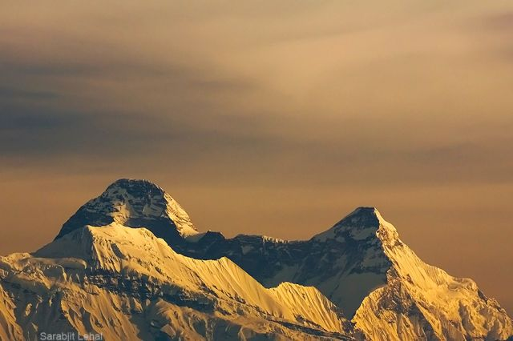
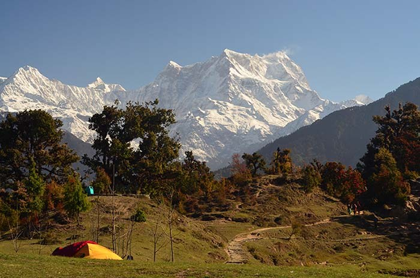
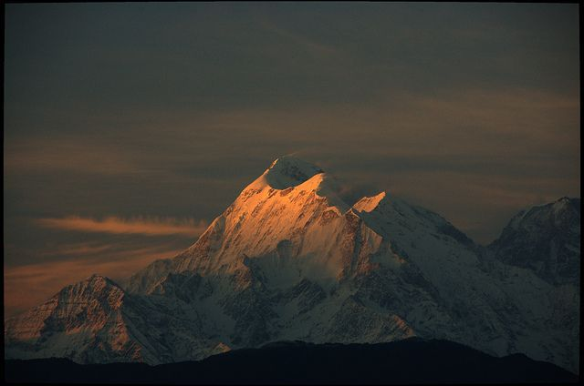
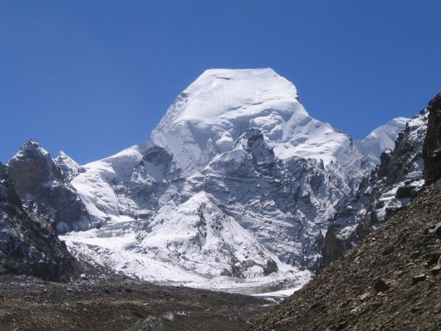
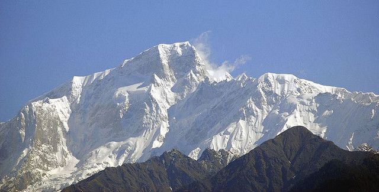
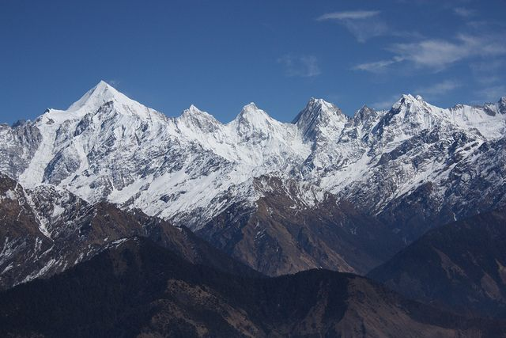
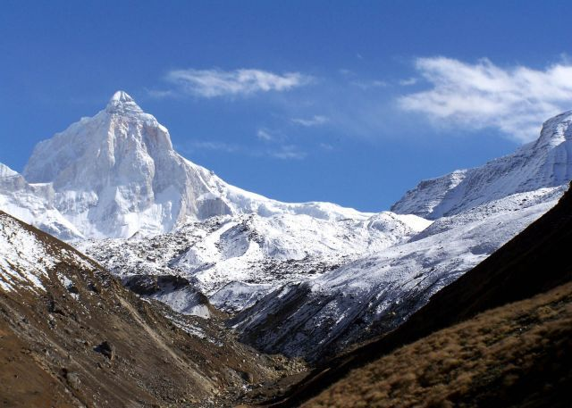
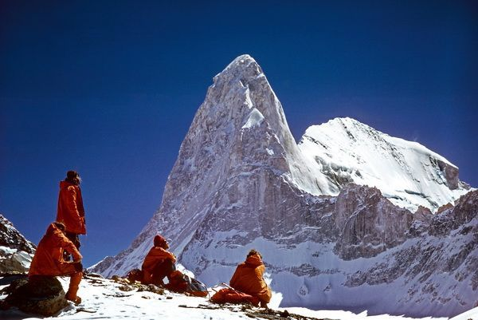
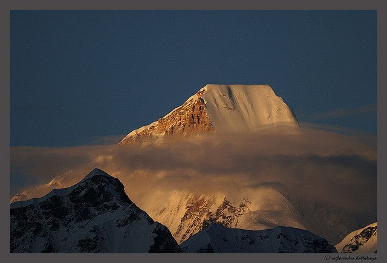
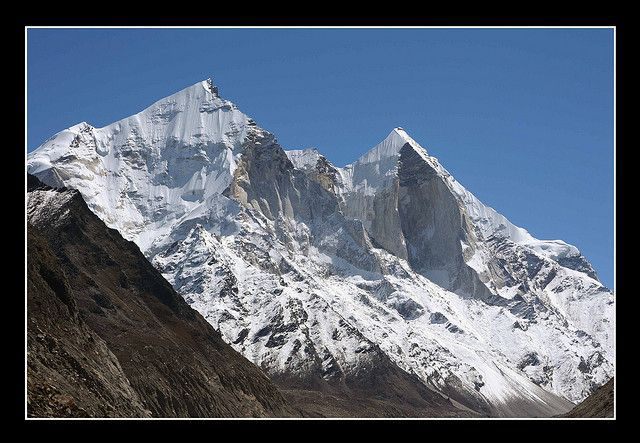

The Himalayas is divided into five regions i.e. Punjab Himalayas, Kumaon Himalayas, Nepal Himalayas and Assam Himalayas. Himalayas are home to various snow capped peaks, here is the list of the 10 Highest Himalayan Mountain Peaks of Uttarakhand which lies in the Kumaon Himalayan region.
Nanda Devi (7816 m, 25,636 ft)

Nanda Devi is the highest peak which lies wholly in India in and the highest peak in Uttarakhand. Nanda Devi is a two peak massif forming a 2 kms long east west ridge. Nanda Devi main is higher and together these peaks are referred as twin peaks of Goddess Nanda. Nanda Devi is known for its steep rise from the local terrain, it rises over 3300 m from its base on the south Nanda Devi glaciers.
Chaukhamba (7138 m, 23412 ft)

Chaukhamba meaning four pillars is the highest mountain massif in the Gangotri group of Himalayas of the Western Garhwal. The four peaks have heights of respectively 7138, 7088, 6995 and 6854 m. On the western slopes lies the head the Gangotri glacier. The Gangotri glacier gives rise to the Bhagirathi, one of the two main sources of the holy river Ganga.
Trishul (7120 m, 23353 ft)

Trishul massif is a group of three Himalayan mountain peaks which takes the shape of a trident. Trishul Mountain lies in northern Kumaon region of Uttarakhand in Bageshwar district and is best viewed from Kausani or during the Roopkund Trek from Bedini Bugyal.
Satopanth (7075 m, 23206 ft)

Satopanth is formed from two words: "Sat" means "Truth" and "Panth" means "Path", so "Satopanth" means "Path of Truth". Mt. Satopanth situated in Garwhal Himalaya and second highest peak in the Gangotri Group of Garwhal Himalaya range separating the Gangotri and Chaturangi glaciers. Mt. Satopanth is quite famous among those who want to move to next level of Mountaineering as their first climbing peak.
Kedarnath (6962 m,22835 ft)

Mount Kedarnath is a part of Gangotri Group of peaks in the western Garhwal Himalaya in Uttarakhand. Mount Kedarnath has a sub peak called Kedarnath dome and they both were first climbed together, in 1947, by a Swiss team led by André Roch.
Panchachuli Peaks (6905 m, 22649 ft)

Panchachuli lies in eastern Kumaon Himalayas in Pithoragarh district of Uttarakhand. It is believed that this is the place ‘Five Chulis’ (cooking hearths) where the Pandavas cooked their last meal on the way to heaven. They are majestic and form a famous barrier between Darma and Gauri Valleys. Panchachuli base camp trekking route is one of the exciting basecamp trekking.
Thalaysagar (6904 m, 22645 ft)

Mountain Thalay Sagar is located just north of Gangotri in Western Garhwal Himalayas. It is one of the most difficult mountains in the Garhwal with no easy ascent route and to be considered as the test piece of contemporary mountaineering.
Changabang (6866 m, 22520 ft)

Changabang peak is part of the Garhwal Himalaya of Uttarakhand and it is part of a group of peaks that form the northeast wall of the Nanda Devi Sanctuary. Changbang is particularly is a rocky and steep peak in Garhwal Himalayas and considered as tougher climbs though having a lower altitude than other peaks in
the vicinity.
Nanda Kot(6861 m, 22504 ft)

Nanda Kot peak lies in Kumaon Himalayas of Uttarakhand just outside of the ring of peaks enclosing the Nanda Devi Sanctuary. The name Nanda Kot literally means “Nanda’s Fortress” and refers to the abode of one of the sacred forms of the Hindu Goddess Parvati.
Bhagirathi (6856 m, 22487 ft)

The highest peak of the Bhagirathi Group forms a complex and topographically complicated massif. Mount Bhagirathi has three major peaks. It stands at and dominates the end of the valley leading up to Gaumukh which is the end of the Gangotri Glacier and the source of the river Ganga. The upper part of the river Ganga is also called Bhagirathi, and both the mountain and the river are named after King Bhagirath.